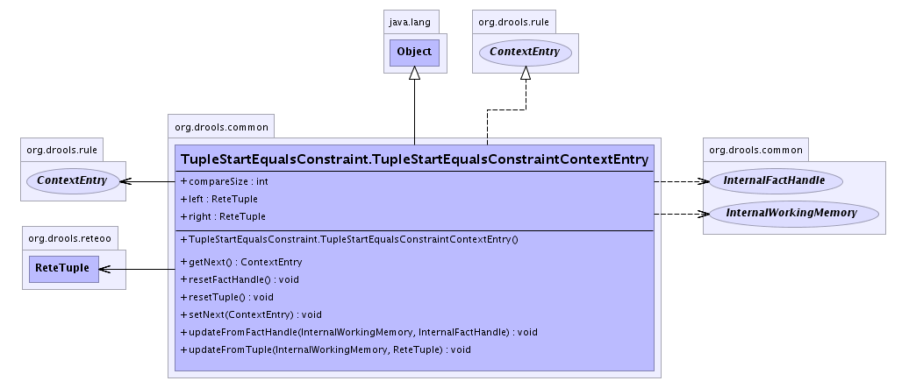

org.drools.common
Class TupleStartEqualsConstraint.TupleStartEqualsConstraintContextEntry
java.lang.Object
 org.drools.common.TupleStartEqualsConstraint.TupleStartEqualsConstraintContextEntry
org.drools.common.TupleStartEqualsConstraint.TupleStartEqualsConstraintContextEntry
- All Implemented Interfaces:
- java.io.Serializable, ContextEntry
- Enclosing class:
- TupleStartEqualsConstraint
public static class TupleStartEqualsConstraint.TupleStartEqualsConstraintContextEntry
- extends java.lang.Object
- implements ContextEntry
- See Also:
- Serialized Form
-
- 
| Methods inherited from class java.lang.Object |
clone, equals, finalize, getClass, hashCode, notify, notifyAll, toString, wait, wait, wait |
left
public ReteTuple left
right
public ReteTuple right
compareSize
public int compareSize
TupleStartEqualsConstraint.TupleStartEqualsConstraintContextEntry
public TupleStartEqualsConstraint.TupleStartEqualsConstraintContextEntry()
getNext
public ContextEntry getNext()
- Specified by:
getNext in interface ContextEntry
setNext
public void setNext(ContextEntry entry)
- Specified by:
setNext in interface ContextEntry
updateFromTuple
public void updateFromTuple(InternalWorkingMemory workingMemory,
ReteTuple tuple)
- Specified by:
updateFromTuple in interface ContextEntry
updateFromFactHandle
public void updateFromFactHandle(InternalWorkingMemory workingMemory,
InternalFactHandle handle)
- Specified by:
updateFromFactHandle in interface ContextEntry
resetTuple
public void resetTuple()
- Specified by:
resetTuple in interface ContextEntry
resetFactHandle
public void resetFactHandle()
- Specified by:
resetFactHandle in interface ContextEntry